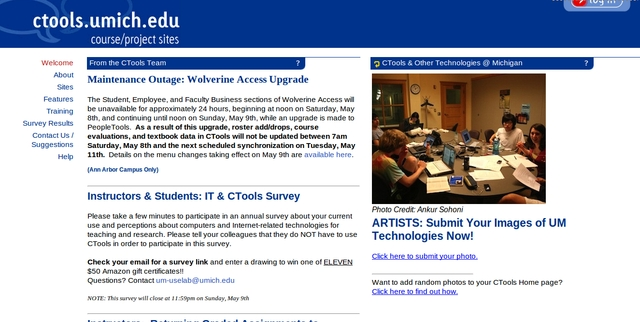
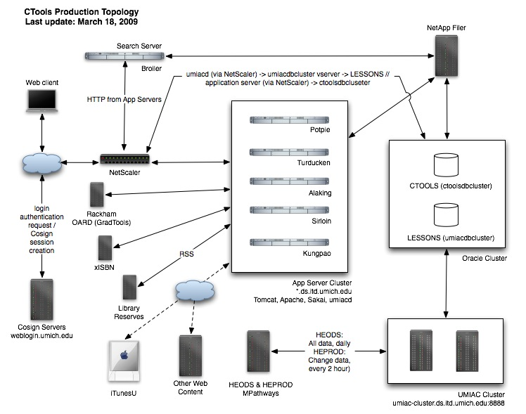

CTools is the University of Michigan's Learning Management System (LMS)

has Course sites for academic courses with limited membership
based on enrollment and strict roles based on those played by the
instructor, teaching assistants and students
and Project sites which can be setup by anyone at UM for any
purpose; really meant for research collaboration and "groups"
CTools is a three-tier web application:
Web server: Apache 2.2 with mod_cosign, mod_jk running on Redhat on Dell 1950 1u with 16G of RAM
Application server: Tomcat 5.5.27 with 6G of heap running on the same hardware as the tomcat5 user
Database server: Oracle 10g running on Solaris 10 on Sun T5120
with 64G SGA (32 is fine) for CTOOLS db instance
Authentication is using Cosign (except for WebDAV)
access to Course sites is controlled via UMIAC (based on data from
HEODS) and can be extended by the instructor to anyone using Friend
accounts
access to Project sites is controlled entirely by the site "owner"
who can add any participants that have uniquenames or Friend
accounts
UMIAC database runs on the same hardware as production CTOOLS but in a
different Oracle instance, confusingly called LESSONS
UMIAC daemon, a small perl "request-response" server, that
connects to the UMIAC db but runs on each individual CTools
application server.

Netscaler (Citrix) does:
SSL offload
load-balancing (new sessions go to quickest responding appserver)
persistence (cookie injection to deal with proxies) -- requires SSL offload
in production we have an HA pair that uses a heartbeat and automatic failover
online add/removal of config, scriptable
customizable weblogging (proxy-mode means real IPs are obscured from appservers)